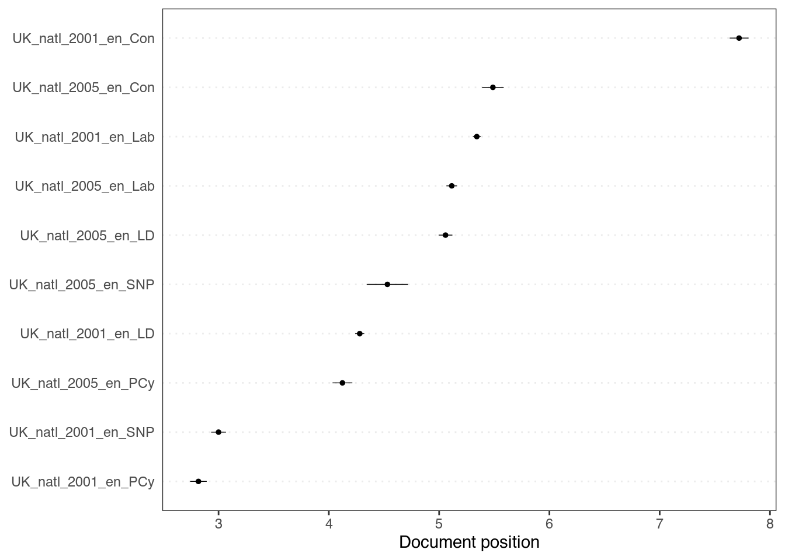
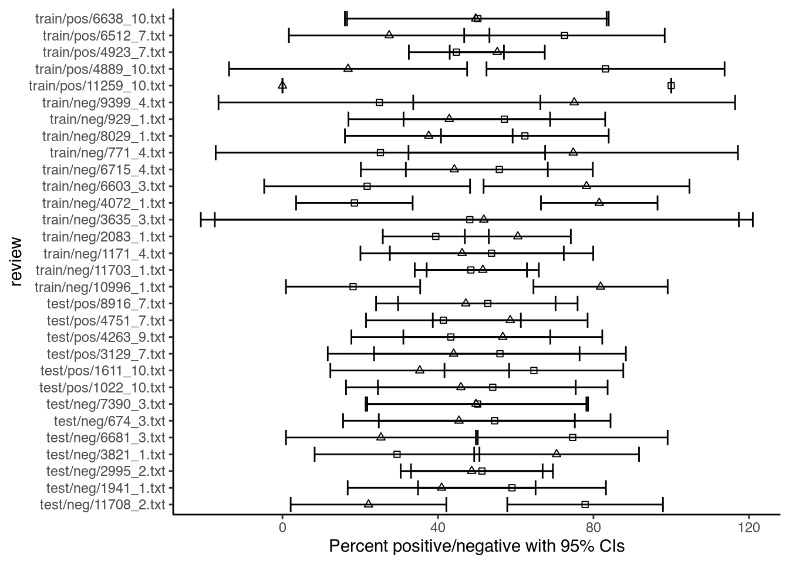
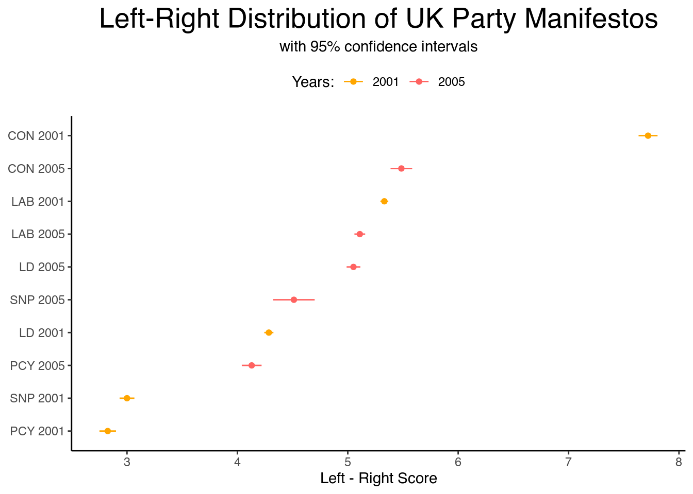
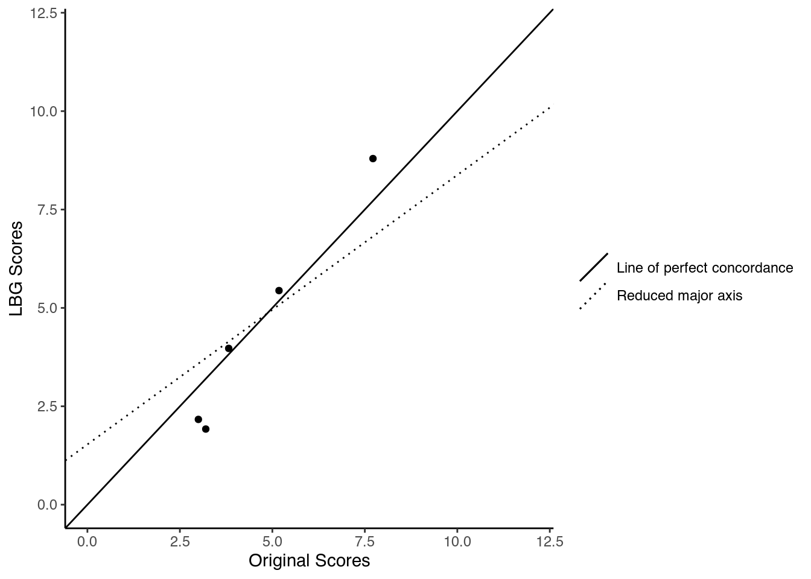
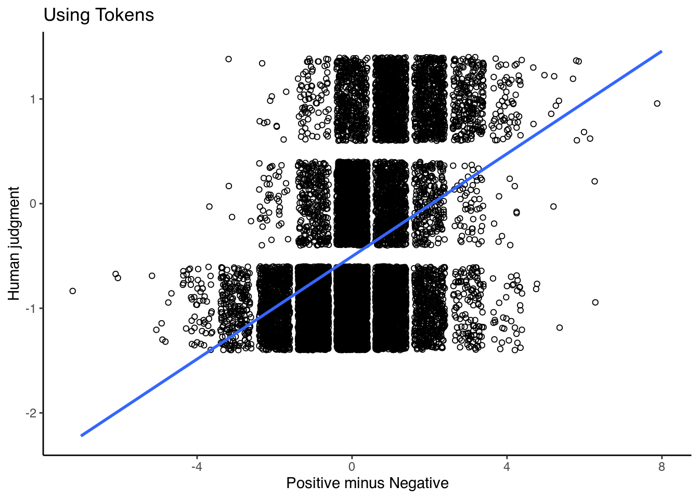

Chapter 6 Scaling
With a dictionary, we aimed to classify our texts into different categories based on the words they contain. While practical, there is no real way to compare these categories: one category is no better or worse than the other. If we do want to compare texts, we have to place them on some sort of scale. Here, we will look at two ways in which we can do so: Wordscores (Laver, Benoit, and Garry 2003) and Wordfish (Slapin and Proksch 2008). Both methods used to be part of the main quanteda package, but have now moved to the quanteda.textmodels package. For both, we will use again the data from the 2001 and 2005 party manifestos of the five largest parties in the United Kingdom. So, we load this data, make the subset, transform it into a dfm, and clean it:
library(quanteda)
library(quanteda.corpora)
data(data_corpus_ukmanifestos)
corpus_manifestos <- corpus_subset(data_corpus_ukmanifestos,
Year == 2001 | Year == 2005)
corpus_manifestos <- corpus_subset(corpus_manifestos, Party ==
"Lab" | Party == "LD" | Party == "Con" | Party == "SNP" |
Party == "PCy")
data_manifestos_tokens <- tokens(corpus_manifestos, what = "word",
remove_punct = TRUE, remove_symbols = TRUE, remove_numbers = TRUE,
remove_url = TRUE, remove_separators = TRUE, split_hyphens = FALSE,
include_docvars = TRUE, padding = FALSE, verbose = TRUE)
data_manifestos_tokens <- tokens_tolower(data_manifestos_tokens,
keep_acronyms = FALSE)
data_manifestos_tokens <- tokens_select(data_manifestos_tokens,
stopwords("english"), selection = "remove")
data_manifestos_dfm <- dfm(data_manifestos_tokens)6.1 Wordscores
The idea of Wordscores is to use reference texts (from which we know the position) to position our virgin texts (from which we do not know the position). Here, we will use the 2001 documents as reference texts and the 2005 documents as virgin texts. Here, we the scale we want to position our documents on is the general left-right scale. Thus, we need to know the positions for the 2001 documents on this. Here, we will use the left-right scale from the 2002 Chapel Hill Expert Survey (Bakker et al. 2012) to do so.
To start, we have to check the order of the documents inside our dfm:
data_manifestos_dfm@Dimnames$docs## [1] "UK_natl_2001_en_Con" "UK_natl_2001_en_Lab" "UK_natl_2001_en_LD"
## [4] "UK_natl_2001_en_PCy" "UK_natl_2001_en_SNP" "UK_natl_2005_en_Con"
## [7] "UK_natl_2005_en_Lab" "UK_natl_2005_en_LD" "UK_natl_2005_en_PCy"
## [10] "UK_natl_2005_en_SNP"We can then set the scores for the reference texts. For the virgin texts, we set NA instead. Then, we run the wordscores model - providing the dfm and the reference scores - and save it into an object:
library(quanteda.textmodels)
scores <- c(7.72,5.18,3.82,3.2,3,NA,NA,NA,NA,NA)
ws <- textmodel_wordscores(data_manifestos_dfm, scores)
summary(ws)##
## Call:
## textmodel_wordscores.dfm(x = data_manifestos_dfm, y = scores)
##
## Reference Document Statistics:
## score total min max mean median
## UK_natl_2001_en_Con 7.72 7179 0 92 0.8606 0
## UK_natl_2001_en_Lab 5.18 16395 0 166 1.9654 0
## UK_natl_2001_en_LD 3.82 12337 0 101 1.4789 0
## UK_natl_2001_en_PCy 3.20 3508 0 72 0.4205 0
## UK_natl_2001_en_SNP 3.00 5693 0 108 0.6825 0
## UK_natl_2005_en_Con NA 4350 0 46 0.5215 0
## UK_natl_2005_en_Lab NA 13370 0 147 1.6027 0
## UK_natl_2005_en_LD NA 9265 0 109 1.1106 0
## UK_natl_2005_en_PCy NA 4204 0 148 0.5040 0
## UK_natl_2005_en_SNP NA 1509 0 49 0.1809 0
##
## Wordscores:
## (showing first 30 elements)
## time common sense conservative manifesto introduction
## 5.838 6.540 7.376 7.161 4.478 3.982
## lives raising family living safely earning
## 6.047 4.427 5.519 4.719 5.743 6.046
## staying healthy growing older knowing world
## 6.946 4.294 4.745 6.280 7.720 4.366
## leader stronger society town country civilised
## 4.524 4.910 4.342 7.515 4.401 4.278
## proud democracy conclusion present ambitious programme
## 6.069 5.267 6.946 3.594 4.466 4.233When we run the summary command, we can see the word scores for each word. This is the position of that word on our scale of interest. We then only need to figure out how often these words occur in each of the texts, add up their scores, and divide this by the total number of words of the texts. This gives us the raw score of the text. Yet, this raw score has some problems. Most important of which is that as some words occur in almost all texts, all the scores will be very clustered in the middle of our scale. To prevent this, we can spread out the scores again, so they look more like the scores of our reference texts. This rescaling has two versions. The first was the original as proposed by Laver, Benoit, and Garry (2003), and focuses on the variance of the scores. The idea here is that the distribution of the scores of the virgin texts has the correct mean, but an incorrect variance which needs rescaling. The second, proposed by Martin and Vanberg (2008), focuses on the extremes of the scores. What it does is to take the scores of the virgin texts and stretch them out to match the extremes of the scores of the reference texts. Here, we run both so we can compare them. For the MV transformation, we will calculate the standard errors for the scores as well:
pred_lbg <- predict(ws, rescaling = "lbg")## Warning: 2203 features in newdata not used in prediction.pred_mv <- predict(ws, rescaling = "mv", se.fit = TRUE, interval = "confidence")## Warning: 2203 features in newdata not used in prediction.## Warning in predict.textmodel_wordscores(ws, rescaling = "mv", se.fit = TRUE, :
## More than two reference scores found with MV rescaling; using only min, max
## values.pred_lbg## UK_natl_2001_en_Con UK_natl_2001_en_Lab UK_natl_2001_en_LD UK_natl_2001_en_PCy
## 8.794566 5.440327 3.971305 1.921840
## UK_natl_2001_en_SNP UK_natl_2005_en_Con UK_natl_2005_en_Lab UK_natl_2005_en_LD
## 2.166928 5.656940 5.128174 5.047475
## UK_natl_2005_en_PCy UK_natl_2005_en_SNP
## 3.752962 4.289754pred_mv## $fit
## fit lwr upr
## UK_natl_2001_en_Con 7.720000 7.633952 7.806048
## UK_natl_2001_en_Lab 5.331214 5.295467 5.366960
## UK_natl_2001_en_LD 4.285022 4.243678 4.326365
## UK_natl_2001_en_PCy 2.825456 2.750505 2.900406
## UK_natl_2001_en_SNP 3.000000 2.932910 3.067090
## UK_natl_2005_en_Con 5.485479 5.387391 5.583567
## UK_natl_2005_en_Lab 5.108908 5.060253 5.157564
## UK_natl_2005_en_LD 5.051437 4.989127 5.113747
## UK_natl_2005_en_PCy 4.129525 4.039903 4.219146
## UK_natl_2005_en_SNP 4.511812 4.323620 4.700003
##
## $se.fit
## UK_natl_2001_en_Con UK_natl_2001_en_Lab UK_natl_2001_en_LD UK_natl_2001_en_PCy
## 0.04390309 0.01823830 0.02109396 0.03824078
## UK_natl_2001_en_SNP UK_natl_2005_en_Con UK_natl_2005_en_Lab UK_natl_2005_en_LD
## 0.03423029 0.05004577 0.02482464 0.03179121
## UK_natl_2005_en_PCy UK_natl_2005_en_SNP
## 0.04572606 0.09601792Note that this does not only predict the 2005 texts, but also the 2001 texts. As such, we can use these scores to see how well this procedure can recover the original scores. One reason why this might be a problem is because of a warning you most likely received. This says that “n features in newdata not used in prediction.” This is as the method does not use all the words from the reference texts to score the virgin texts. Instead, it only uses the words that occur in them both. Thus, when we compare the reference scores with the scores the method gives to the reference documents, can see how well the method does.
To compare the scores, we will use the Concordance Correlation Coefficient as developed by Lin (1989). This coefficient estimates how far two sets of data deviate from a line of 45 degrees (which indicates perfect agreement). To calculate this, we take the scores (here we take the LBG version) from the object we created and combine them with the original scores. From this, we only select the first five texts (those from 2001) and calculate the CCC:
library(DescTools)comparison <- as.data.frame(cbind(pred_lbg, scores))
comparison <- comparison[1:5, ]
CCC(comparison$scores, comparison$pred_lbg, ci = "z-transform",
conf.level = 0.95, na.rm = TRUE)## $rho.c
## est lwr.ci upr.ci
## 1 0.9239205 0.8242101 0.968064
##
## $s.shift
## [1] 1.443978
##
## $l.shift
## [1] -0.05966866
##
## $C.b
## [1] 0.9345491
##
## $blalt
## mean delta
## 1 8.257283 -1.0745660
## 2 5.310163 -0.2603267
## 3 3.895653 -0.1513052
## 4 2.560920 1.2781600
## 5 2.583464 0.8330719The result here is not bad, though the confidence intervals are rather large. We can have a further look at why this is the case by plotting the data. In this plot, we will show the position of the texts, as well as a 45-degree line. Also, we plot the reduced major axis, which shows the symmetrical relationship between the two variables. This line is a linear regression, which we compute first using the lm command:
library(ggplot2)
lm_line <- lm(comparison$scores ~ comparison$pred_lbg)
ggplot(comparison, aes(x=scores, y=pred_lbg)) +
geom_point()+
xlab("Original Scores")+
ylab("LBG Scores")+
ylim(0, 12)+
xlim(0, 12)+
geom_abline(aes(intercept = 0,
slope =1,
linetype = "dashed"))+
geom_abline(aes(intercept = lm_line$coefficients[1],
slope = lm_line$coefficients[2],
linetype = "solid" ))+
scale_shape_manual(name = "",
values=c(1,3),
breaks=c(0,1),
labels=c("Line of perfect concordance" , "Reduced major axis"))+
scale_linetype_manual(name = "",
values=c(1,3),
labels=c("Line of perfect concordance" , "Reduced major axis"))+
theme_classic()
This graph allows us to spot the problem. That is that while we gave the manifesto for Plaid Cymru (PCy) a reference score of 3.20, Wordscores gave it 1.91. Removing this manifesto from our data-set would thus improve our estimates.
Apart from positioning the texts, we can also have a look at the words themselves. We can do this with the textplot_scale1d command, for which we also specify some words to highlight:
library(quanteda.textplots)
textplot_scale1d(ws, margin = "features", highlighted = c("british",
"vote", "europe", "taxes"))
Finally, we can have a look at the confidence intervals around the scores we created. For this, we use the same command as above, though instead of specifying features (referring to the words), we specify texts. Note that we can only do this for the MV scores, as only here we also calculated the standard errors:
textplot_scale1d(pred_mv, margin = "documents")Note that we can also make this graph ourselves. This requires some data-wrangling using the dplyr package. This package allows us to use pipes, which are denoted by the %>% command. This pipe transports an output of a command to another one before saving it. This saves us from constructing too many intermediate data-sets. Thus, here we first bind together the row names of the fit (which denote the documents), the fit itself, and the standard error of the fit (which also includes the lower and upper bound). We then transform this into a tibble (which is similar to a dataframe), rename the first and fifth columns, and finally ensure that all the values (which are still characters), are numeric (and year a factor):
library(dplyr)
data_textplot <- cbind(rownames(as.data.frame(pred_mv$se.fit)), pred_mv$fit, pred_mv$se.fit) %>%
as_tibble() %>%
rename(id = 1,
se = 5) %>%
mutate(fit = as.numeric(fit),
lwr = as.numeric(lwr),
upr = as.numeric(upr),
se = as.numeric(se),
year = as.factor(stringr::str_sub(id, start = 9, end = 12)))## Warning: The `x` argument of `as_tibble.matrix()` must have unique column names if `.name_repair` is omitted as of tibble 2.0.0.
## Using compatibility `.name_repair`.If we now look at our data_textplot object, we see that we have all the data we need: the fit (the average value), the lower and upper bounds, the year and the id that tells us with which party and year we are dealing. The only thing that we perhaps can do is to give the parties slightly better names. To see the current ones, type data_textplot$id in the console. We can then give them different names (just ensure that the order remains the same). We then sort them in decreasing order based on their fit:
data_textplot$id <- as.character(c("CON 2001", "LAB 2001", "LD 2001", "PCY 2001", "SNP 2001", "CON 2005","LAB 2005", "LD 2005","PCY 2005", "SNP 2005"))
data_textplot$id <- with(data_textplot, reorder(id, fit))Then, we can plot this data using ggplot:
ggplot() +
geom_point(data = data_textplot, aes(x = fit, y = id, colour = year)) +
geom_errorbarh(data = data_textplot, aes(xmax = upr, xmin = lwr, y = id, colour = year), height = 0) +
theme_classic() +
scale_colour_manual(values = c("#ffa600", "#ff6361"),
name = "Years:",
breaks = c("2001", "2005"),
labels = c("2001", "2005")) +
labs(title = "Left-Right Distribution of UK Party Manifestos",
subtitle = "with 95% confidence intervals",
x = "Left - Right Score",
y = NULL) +
theme_classic()+
theme(plot.title = element_text(size = 20, hjust = 0.5),
plot.subtitle = element_text(hjust = 0.5),
legend.position = "top")
6.2 Wordfish
Different from Wordscores, for Wordfish we do not need any reference text. Instead of this, the method using a model (based on a Poisson distribution) to calculate the scores for the texts. The only thing we have to tell Wordfish is which texts define the extremes of our scale.
Here, we take the SNP party manifesto as the most left-wing (text 5), and the Conservative manifesto as the most right-wing (text 1). Before we run the model, we set a seed as the model draws random numbers and we want our work to be replicable:
set.seed(42)
wordfish <- textmodel_wordfish(data_manifestos_dfm, dir = c(5,
1))
summary(wordfish)##
## Call:
## textmodel_wordfish.dfm(x = data_manifestos_dfm, dir = c(5, 1))
##
## Estimated Document Positions:
## theta se
## UK_natl_2001_en_Con 0.45019 0.007679
## UK_natl_2001_en_Lab 0.81006 0.002302
## UK_natl_2001_en_LD 0.41124 0.006307
## UK_natl_2001_en_PCy 0.15749 0.017494
## UK_natl_2001_en_SNP -1.06313 0.015665
## UK_natl_2005_en_Con 0.49764 0.008975
## UK_natl_2005_en_Lab 0.82510 0.002465
## UK_natl_2005_en_LD 0.25800 0.009393
## UK_natl_2005_en_PCy 0.06539 0.017745
## UK_natl_2005_en_SNP -2.41199 0.007575
##
## Estimated Feature Scores:
## time common sense conservative manifesto introduction lives raising
## beta 0.3518 0.5047 1.057 0.7323 0.6961 -0.3103 0.1735 1.2013
## psi 2.9531 1.6942 1.271 2.1655 2.2049 1.1399 1.6881 0.4653
## family living safely earning staying healthy growing older knowing
## beta 1.535 1.076 -0.602201 1.1355 2.106 0.5472 -0.1338 5.6901 0.8190
## psi 1.369 1.303 -0.004214 -0.7429 -1.256 0.9864 1.1348 -0.6328 -0.6289
## world leader stronger society town country civilised proud
## beta -0.2892 -0.0004557 0.5799 0.455 -0.4604 0.1801 0.4196 -0.5724
## psi 3.0965 0.0954406 1.3595 2.106 0.1917 2.5988 -0.6439 0.9771
## democracy conclusion present ambitious programme
## beta 1.177 1.308 -0.2745 -0.3027 0.7754
## psi 1.303 -1.653 1.5034 0.7156 1.7173Here, theta gives us the position of the text. As with Wordscores, we can also calculate the confidence intervals (note that theta is now called fit):
pred_wordfish <- predict(wordfish, interval = "confidence")
pred_wordfish## $fit
## fit lwr upr
## UK_natl_2001_en_Con 0.45018987 0.43513947 0.4652403
## UK_natl_2001_en_Lab 0.81006430 0.80555209 0.8145765
## UK_natl_2001_en_LD 0.41124290 0.39888176 0.4236040
## UK_natl_2001_en_PCy 0.15749257 0.12320579 0.1917794
## UK_natl_2001_en_SNP -1.06312773 -1.09382985 -1.0324256
## UK_natl_2005_en_Con 0.49763583 0.48004576 0.5152259
## UK_natl_2005_en_Lab 0.82510393 0.82027268 0.8299352
## UK_natl_2005_en_LD 0.25799681 0.23958695 0.2764067
## UK_natl_2005_en_PCy 0.06538904 0.03061003 0.1001680
## UK_natl_2005_en_SNP -2.41198751 -2.42683400 -2.3971410As with Wordscores, we can also plot graphs for Wordfish, using the same commands. The first graph we will again be looking at is the distribution of the words, which here forms an “Eifel Tower” like graph:
textplot_scale1d(wordfish, margin = "features", highlighted = c("british",
"vote", "europe", "election"))
And then we can do the same for the documents as well. Note that we can also make a similar graph to the one we made ourselves above (just replace pred_mv with pred_wordfish):
textplot_scale1d(wordfish, margin = "documents")